Zhiwen Mo, Lei Wang, Jianyu Wei, Zhichen Zeng, Shijie Cao, Lingxiao Ma, Naifeng Jing, Ting Cao, Jilong Xue, Fan Yang, Mao Yang
Imperial College London, Microsoft Research, Peking University, USTC, University of Washington, SJTU
ISCA 2025
Presenter: wzw
Date: 2026-03-25
weight-only LLM 的主算子已变成 mpGEMM，但现有 GPU/TPU 不原生支持，只能走 dequantize + GEMM。DFG transformation + operator fusion + weight reinterpretation + elongated tiling + LMMA，把 mpGEMM 变成可高复用的查表张量核。1.42× GEMV、72.2× GEMM；端到端在 low-bit LLM 上达 2.06× ~ 5.51× 推理加速。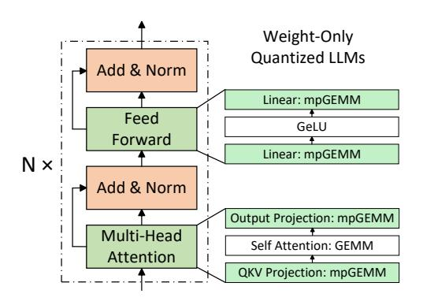
weight-only quantization 下，QKV / Output projection / FFN linear 都变成 W_INTx × A_FP16/8 的 mpGEMM。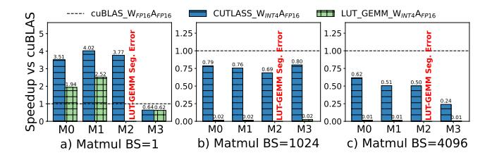
LUT-GEMM 在 A100 上受限于 prmt 指令宽度、register duplication 与 shared-memory bank conflict，大 batch 时甚至显著落后于 CUTLASS。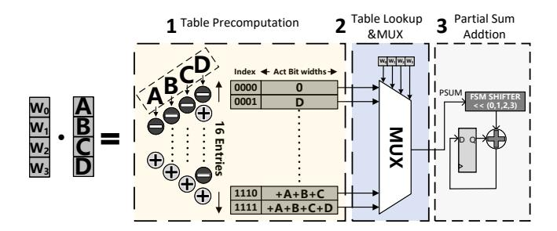
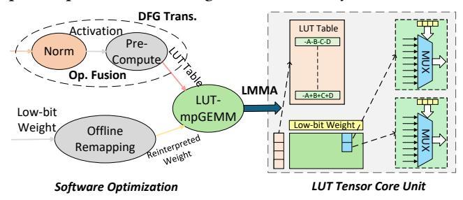
DFG transformation 把 precompute 剥离成独立算子；operator fusion 吃掉额外访存；offline remapping 做权重重解释。bit-serial、半尺寸 table 和高复用 tiling 的 Tensor Core。LMMA 指令把 LUT-mpGEMM 纳入现有 tile-based compiler。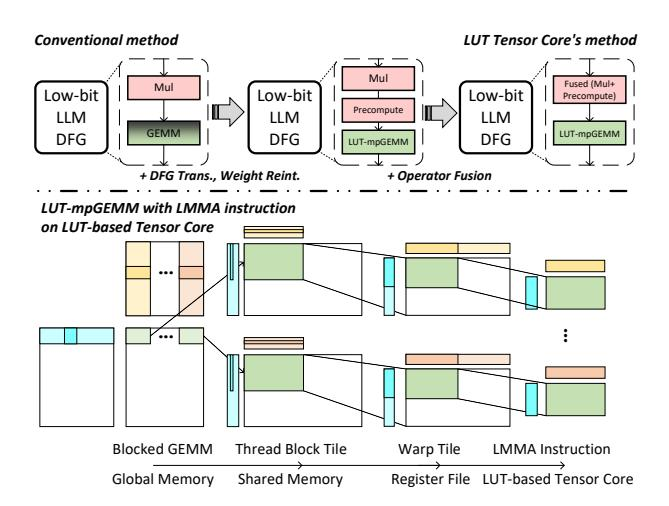
OPT-175B 的例子中，同一张表会被重复算 3072 次。DFG transformation + fusion，让 LUT table 变成 一次建表、多处广播。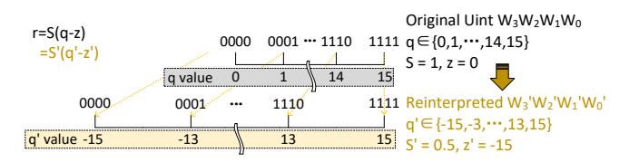
uint q_w 重映射到关于 0 对称的 q'_w；于是 LUT[idx] = -LUT[~idx]，表长从 2^K 降到 2^{K-1}。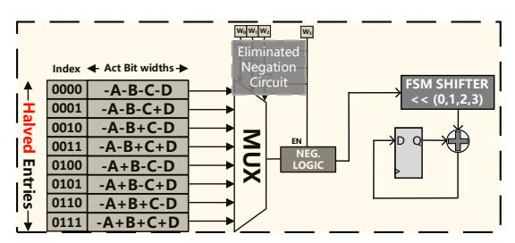
W_BIT 被映射成 cycle 数，因此同一物理结构可支持 INT1/2/4 × FP16/8/INT8 等不同精度组合。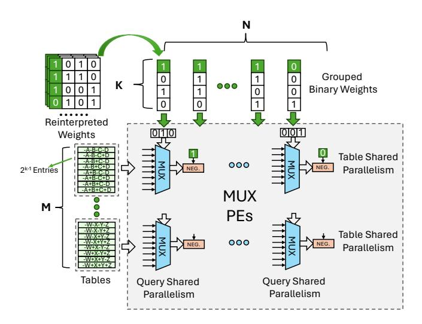
M、大 N、适中 K。2^K 增长，而收益主要靠同一张 table 在更多 weight columns 上复用，所以 N 必须大。M2N64K4，这就是论文反复强调的 elongated tiling。lmma.{M}{N}{K}.{A_dtype}{W_dtype}{Accum_dtype}{O_dtype}，保持与 MMA 接近的编程模型。TVM / Roller / Welder 只需注册新的 intrinsic 和 tiling 规则，就能把 low-bit LLM 的 mpGEMM 映射到 LUT Tensor Core。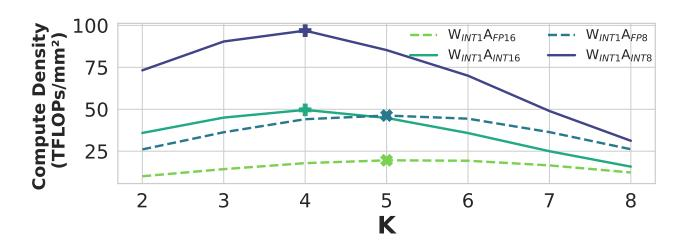
K 太小会留下太多加法；K 太大又让 LUT 指数膨胀，因此 K=4 是甜蜜点。W_INT1A_FP16，LUT DP4 的 compute density 达 61.55 TFLOPs/mm²，而传统 W_FP16A_FP16 MAC DP4 只有 3.39 TFLOPs/mm²。4× ~ 6× PPA 改善，但证据仍是综合与仿真，不是 silicon。Synopsys DC + TSMC 28nm，统一目标 1GHz。Accel-Sim，模拟原始 A100 与搭载 LUT Tensor Core 的 A100。A100 / RTX3090 的平均误差约 5.21%。LLAMA-2, OPT, BLOOM, BitNet；对比 MAC-based TC、ADD-based TC、LUT-GEMM、UNPU 等。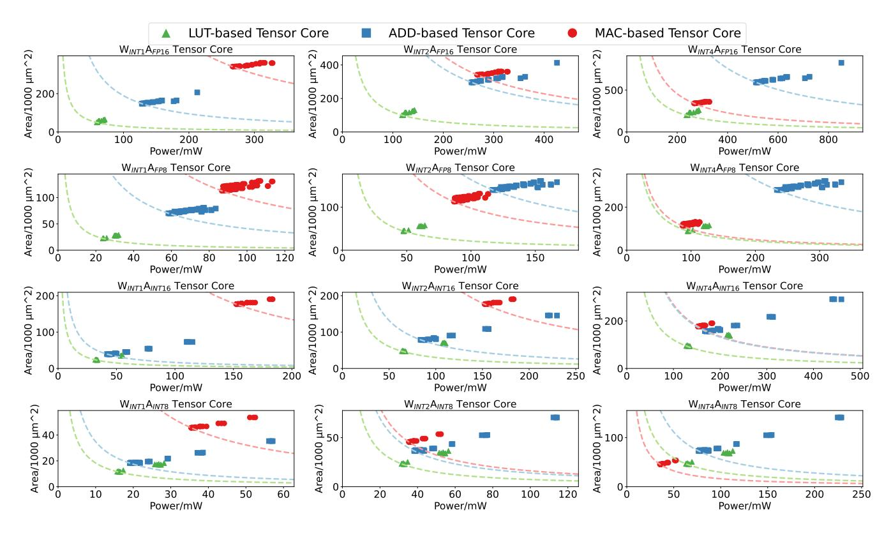
W_INT1/2/4 × A_FP16/8/INT8/INT16 组合下，绿色 LUT 点都更靠近 area-power 边界。16% 面积，却能提供更高的 mpGEMM 性能。W_INT8A_INT4 一类更高位宽组合下，LUT 优势已经不再绝对。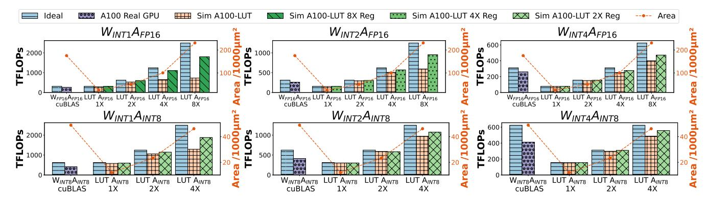
LLAMA2-13B 提取的 mpGEMM shape 上，用 Accel-Sim 评估 LUT Tensor Core。W_INT1A_FP16 为例，LUT 版只用传统 Tensor Core 14.3% area，却能达到略高 throughput。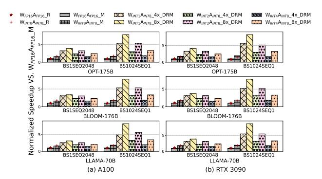
OPT-175B / BLOOM-176B / LLAMA-70B 上，端到端收益随 batch 与模型变化，但趋势稳定优于基线。8.2× normalized speedup；更保守看表 1，实际 low-bit inference speedup 为 2.06× ~ 5.51×。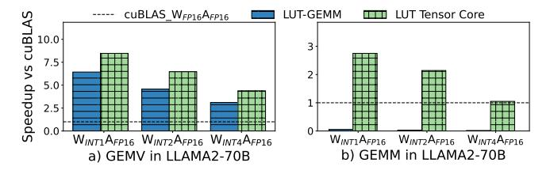
LUT-GEMM，LUT Tensor Core 达到 1.42× GEMV 和 72.2× GEMM。UNPU，加上 reinterpretation、negation elimination 和 fusion 后，compute intensity / power efficiency 都到 1.44×。INT8 table quantization 几乎无损，LLAMA2-7B W_INT2 上 PPL 7.68 → 7.69。precompute fusion、weight reinterpretation、elongated tiling、LMMA + compiler stack。Accel-Sim、自建 simulator 和 28nm 归一化，并非 silicon 结果。FP4/FP8 Tensor Core、长上下文 attention、KV-cache quantization 做更直接的 full-system 对比。